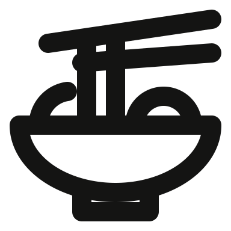
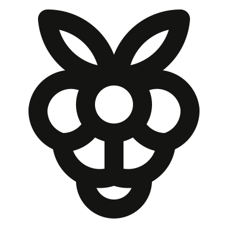
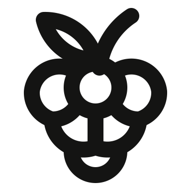
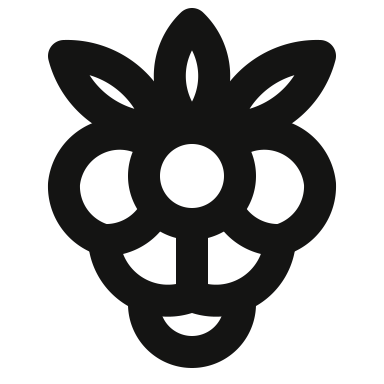
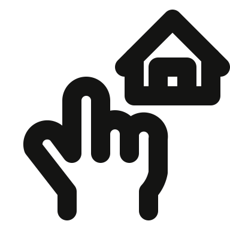
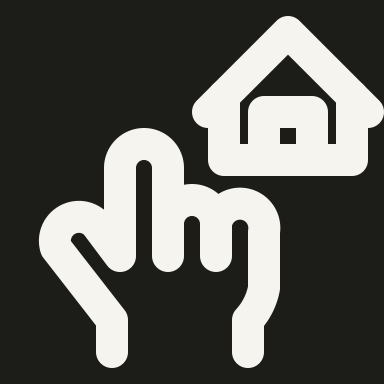
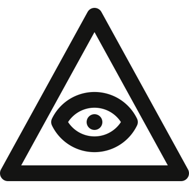

20 meaning fixes — all returned to Ready Worker thuan-mac · AUTHOR gpt-6 · 2 strict passes · 18 accepted visual exceptions. Every exception retains its automatic findings. Each comparison includes an enlarged view and a native 48px view.
solo/counterclockwise-circular-refresh-arrows-batch-020-03 Ready · pass · exception · AUTHOR gpt-6
Original Rejected Revised light Revised dark Before: The arrows are distorted into a narrow S rather than following one round cycle.
Changed: Restored a common circular orbit, counterclockwise direction and distinct arrow tips.
SVG · Validation · Production finish
solo/railing-with-three-uprights Ready · strict pass · AUTHOR gpt-6
Original Rejected Revised light Revised dark
Before: The solid bars make a Roman numeral rather than the reference railing with broad outlined rails.
Changed: Restored two rounded outlined rails with three evenly spaced upright supports.
SVG · Validation · Production finish
solo/rain-cloud-with-three-streaks Ready · strict pass · AUTHOR gpt-6
Original Rejected Revised light Revised dark
Before: The cloud is flattened and every rain streak has the same short length.
Changed: Restored a tall central cloud lobe and three slanted rain streaks with a longer middle streak.
SVG · Validation · Production finish
solo/rainy-night Ready · pass · exception · AUTHOR gpt-6
Original Rejected Revised light Revised dark Before: The moon is an open C stroke and the cloud silhouette is angular.
Changed: Restored a closed crescent behind a rounded cloud and three diagonal precipitation strokes.
SVG · Validation · Production finish
solo/raised-open-palm Ready · pass · exception · AUTHOR gpt-6
Original Rejected Revised light Revised dark Before: The wrist and thumb anatomy were shortened or lost, so the raised hand reads as a mitten or wave.
Changed: Restored four graduated fingers, a separate thumb fold, a tall palm and an open wrist.
SVG · Validation · Production finish
solo/raised-open-palm-83c18653 Ready · pass · exception · AUTHOR gpt-6
Original Rejected Revised light Revised dark Before: The wrist and thumb anatomy were shortened or lost, so the raised hand reads as a mitten or wave.
Changed: Restored four graduated fingers, a separate thumb fold, a tall palm and an open wrist.
SVG · Validation · Production finish
solo/raised-open-palm-reference-417c1577 Ready · pass · exception · AUTHOR gpt-6
Original Rejected Revised light Revised dark Before: The wrist and thumb anatomy were shortened or lost, so the raised hand reads as a mitten or wave.
Changed: Restored four graduated fingers, a separate thumb fold, a tall palm and an open wrist.
SVG · Validation · Production finish
solo/raised-open-palm-solo Ready · pass · exception · AUTHOR gpt-6
Original Rejected Revised light Revised dark
Before: The lower palm and wrist are absent, and only three fingers remain.
Changed: Rebuilt the complete diagonal open hand with four fingers, thumb, palm crease and wrist.
SVG · Validation · Production finish
solo/raised-peace-sign-hand Ready · pass · exception · AUTHOR gpt-6
Original Rejected Revised light Revised dark Before: The folded fingers became edge bumps and the crossing thumb disappeared.
Changed: Restored two separated raised fingers, two curled knuckles, and a thumb crossing the palm.
SVG · Validation · Production finish
solo/rakhi-bracelet-on-wrist Ready · pass · exception · AUTHOR gpt-6
Original Rejected Revised light Revised dark Before: The wrist ornament sits outside the arm and the palm became a jagged outline.
Changed: Rebuilt a diagonal closed hand, a continuous wrist band and a central circular rakhi ornament.
SVG · Validation · Production finish
solo/ramen-bowl-raised-chopsticks Ready · pass · exception · AUTHOR gpt-6
Original Rejected Revised light 
Revised dark Before: The bowl lost its foot, round contents and hanging noodles; one chopstick floats separately.
Changed: Restored two full chopsticks, a lifted noodle bundle, bowl contents and a foot under the curved bowl.
SVG · Validation · Production finish
solo/raspberry-fruit-leaves Ready · pass · exception · AUTHOR gpt-6
Original Rejected Revised light 
Revised dark Before: The raspberry became a three-lobed blank outline with no drupelet pattern.
Changed: Restored six rounded berry segments in a tapered cluster beneath two pointed leaves.
SVG · Validation · Production finish
solo/raspberry-with-leaf-and-stem Ready · pass · exception · AUTHOR gpt-6
Original Rejected Revised light 
Revised dark Before: The repeated bumps read as a cog or flower rather than a raspberry made of round drupelets.
Changed: Restored a layered tapered berry, a pointed side leaf and a curved stem.
SVG · Validation · Production finish
solo/raspberry-with-three-leaves Ready · pass · exception · AUTHOR gpt-6
Original Rejected Revised light 
Revised dark Before: The fruit has only two oversized lobes and a tiny base, losing the clustered berry structure.
Changed: Restored a tapered six-segment berry and three individually legible pointed leaves.
SVG · Validation · Production finish
solo/rating-booklet Ready · pass · exception · AUTHOR gpt-6
Original Rejected Revised light Revised dark Before: The booklet lost its angled rear cover and both text rules, and its star is cramped.
Changed: Restored an angled rear leaf, a clear rating star, and one text line on the front cover; one of the two source rules is omitted for legibility.
SVG · Validation · Production finish
solo/rattlesnake Ready · pass · exception · AUTHOR gpt-6
Original Rejected Revised light Revised dark Before: The tail is enclosed like a handle and the broad snake head lacks eyes and a forked tongue.
Changed: Restored an S-shaped snake with a separate segmented rattle, a broad head, eyes and a forked tongue.
SVG · Validation · Production finish
solo/real-estate-deal-shake Ready · pass · exception · AUTHOR gpt-6
Original Rejected Revised light Revised dark Before: The handshake was reduced to an X above a bowl-shaped outline.
Changed: Restored opposing cuffs, a crossing thumb, interlocking hands and a house roof above.
SVG · Validation · Production finish
solo/real-estate-market-calculator-house Ready · pass · exception · AUTHOR gpt-6
Original Rejected Revised light Revised dark Before: The calculator became a generic device with a display and two dots, losing the arithmetic operators.
Changed: Restored plus, minus, multiplication and equals operators in a 2x2 arrangement on the calculator in front of the house.
SVG · Validation · Production finish
solo/real-estate-search-house-2 Ready · pass · exception · AUTHOR gpt-6
Original Rejected Revised light 
Revised dark 
Before: The house has no doorway and the pointing hand has a floating mitten silhouette without a wrist.
Changed: Restored a house with a doorway above a complete pointing hand, including bent fingers and wrist.
SVG · Validation · Production finish
solo/religion-cao-dai Ready · pass · exception · AUTHOR gpt-6
Original Rejected Revised light 
Revised dark Before: The eye merged with the triangle sides and lost its lower eyelid and outlined iris.
Changed: Restored a complete almond eye enclosed by a triangular outline; the iris is a solid pupil to keep the eye open and clear at 48px.
SVG · Validation · Production finish